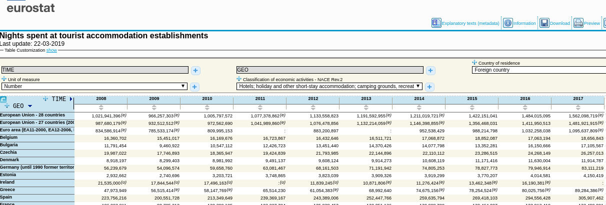
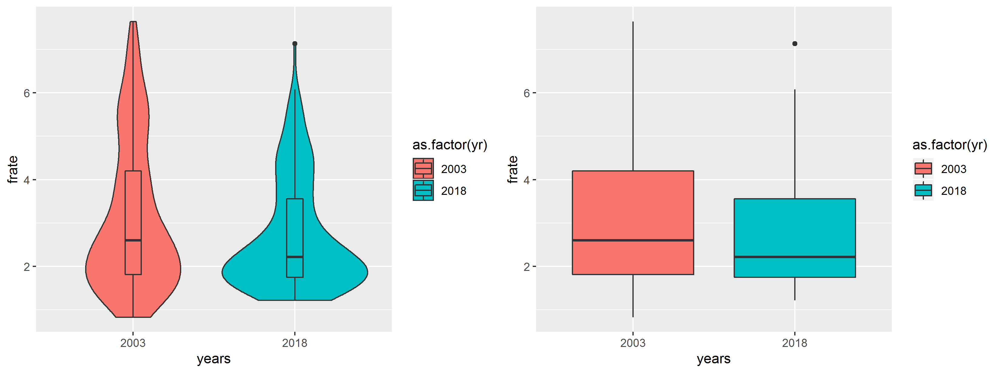
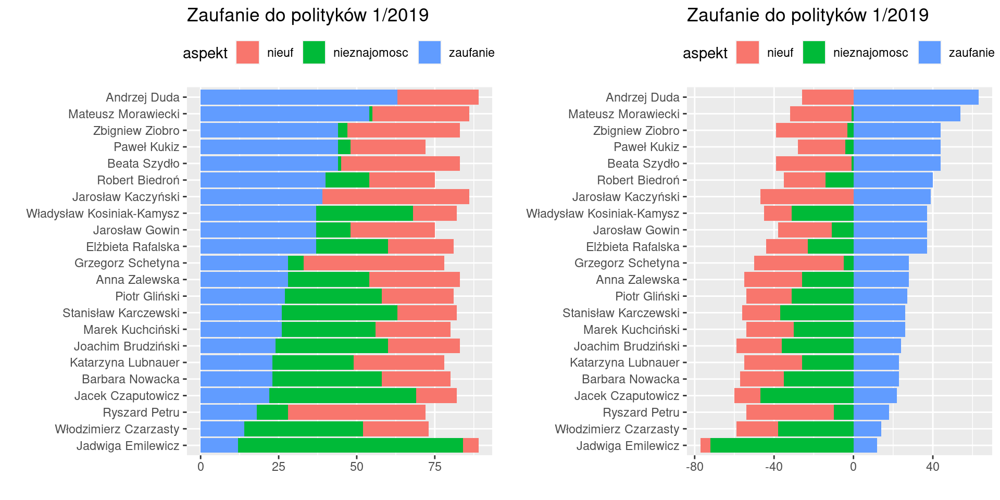
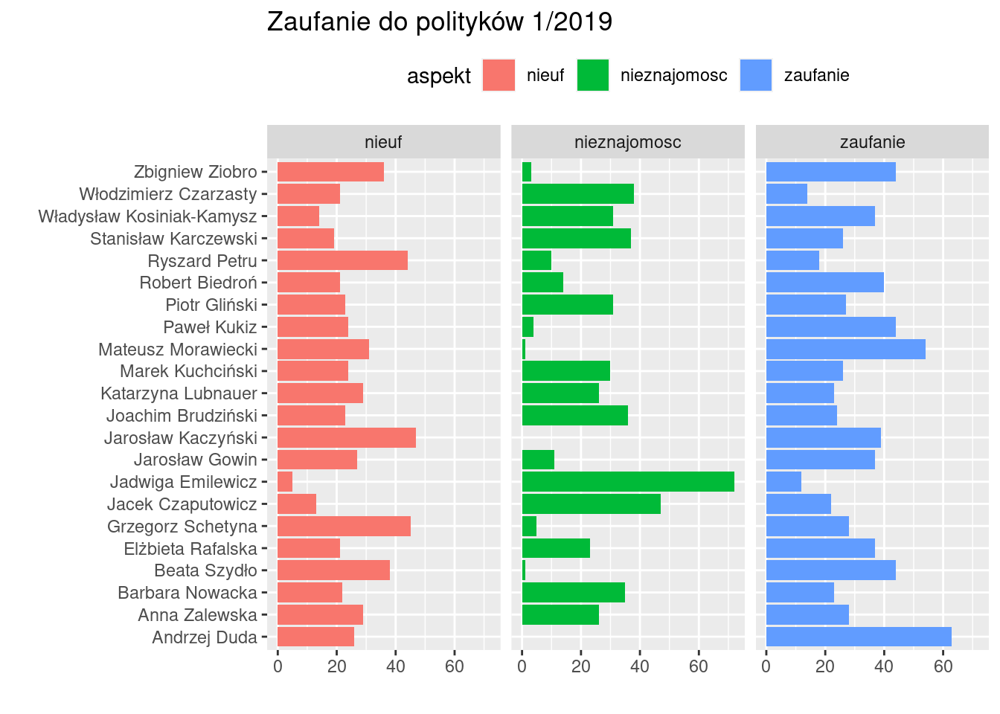

2 Wizualizacja danych i wykresy
Wykresy statystyczne są graficzną formą prezentacji materiału statystycznego, są mniej precyzyjne i szczegółowe niż tablice, natomiast bardziej sugestywne.
Rodzaje wykresów (podział ze względu na zastosowanie):
Jedna cecha
szeregi strukturalne: punktowe, słupkowe, histogram, pudełkowe, kołowe; szeregi czasowe: liniowe, słupkowe, punktowe; szeregi przestrzenne: kartogramy.
Dwie cechy
wykres rozrzutu (scatter-plot), wykres liniowy liniowy
2.1 Wykresy przedstawiające rozkład wartości jednej zmiennej
Celem jest pokazanie rozkładu wartości cechy w populacji: jakie wartości występują często a jakie rzadko, jak bardzo wartości różnią się między sobą. Jak różnią się rozkłady dla różnych ale logicznie powiązanych populacji (np rozkład czegoś-tam w kraju A i B albo w roku X, Y i Z). Do tego celu stosuje się: histogram (albo wykres słupkowy dla skal nominalnych), wykres punktowy, wykres pudełkowy oraz kołowy. Omówimy je na przykładach
2.2 Histogram
Współczynnik dzietności – przeciętna liczba urodzonych dzieci przypadających na jedną kobietę w wieku rozrodczym (15–49 lat). Przyjmuje się, iż FR między 2,10–2,15 zapewnia zastępowalność pokoleń.
Plik fertility_rate_2003_2018.csv (źródło: https://ourworldindata.org/grapher/fertility-rate-complete-gapminder) zawiera wartości współczynnika w roku 2003 oraz 2018 (czyli po 15 latach) dla 202 krajów.
Do oceny rozkładu wartości zmiennej służy histogram (por https://pl.wikipedia.org/wiki/Histogram). Jeżeli umieścimy obok siebie dwa (lub więcej) histogramy, możemy w ten sposób porównać (wizualnie) dwa rozkłady:

Kształt histogramu zależy od wyboru rozpiętości przedziału; im przedział węższy tym więcej słupków (ale ich wysokość będzie mniejsza). Poniżej przedstawiono ten sam rozkład dla rozpiętości przedziału równej odpowiednio 0,1, 0,25 oraz 0,5:

Dlatego jeżeli porównujemy różne rozkłady za pomocą umieszczonych obok siebie histogramów to powinny one mieć: tę samą rozpiętość przedziałów, te same skale na obu osiach.
Istnieją wzory na optymalną liczbę przedziałów ale nalepszą metodą jest metoda prób i błędów.
2.3 Wykres punktowy
Czasami jeżeli liczebność populacji nie jest za duża można spróbować przedstawić rozkład cechy na wykresie punktowym:

2.4 Porównanie wielu rozkładów
Jeżeli używamy histogramu to w zasadzie jedyną opcją jest wykreślenie każdego histogramu oddzielnie a następnie umieszczenie ich obok siebie. Wyjątkowo można spróbować wykreślić dwa na jednym wykresie (jeżeli program, którym się posługujemy umożliwia rysowanie kolorem przeźroczystym):

Łącznie na jednym wykresie (wykres punktowy):

2.5 Wykresy kołowe
Dane pochodzą z bazy danych Eurostatu są dostępne pod adresem https://appsso.eurostat.ec.europa.eu/nui/show.do?dataset=tour_occ_nim&lang=en
Nights spent at tourist accommodation establishments by non residents (id tabeli: tour_occ_ninat) czyli po polsku
Noclegi udzielone w turystycznych obiektach noclegowych (https://ec.europa.eu/eurostat/web/products-datasets/-/tin00175;
https://stat.gov.pl/metainformacje/slownik-pojec/pojecia-stosowane-w-statystyce-publicznej/1233,pojecie.html;
https://stat.gov.pl/en/metainformations/glossary/terms-used-in-official-statistics/1233,term.html)
Poniższy rysunek przedstawia typową tabelę (wielowymarową) z danymi
dotyczącymi wykorzystania miejsc noclegowych w krajach UE.
Nagłówek tabeli: TIME, GEO, Unit of measure, Classification of economic activities, Country of residencie definiuje cechy stałe zbiorowści statystycznej. Dla każdej cechy zwykle możliwy jest wybór z kilku dostępnych wariantów. Tabela na rysunku przedstawia dane roczne, dla krajów UE, dotyczące liczby noclegów w hotels, holidays and other short-stay accomodations, camping grounds, recreational vehicle parks and trailes parks (Hotele, Obiekty noclegowe turystyczne i miejsca krótkotrwałego zakwaterowania, Pola kempingowe, włączając pola dla pojazdów kempingowych i pola namiotowe; https://ec.europa.eu/eurostat/ramon/nomenclatures/index.cfm). Skrót NACE oznacza klasyfikację działalności gospodarczej, która służy do określenia jakie miejsca noclegowe są uważane za turystyczne (bo to nie jest oczywiste).

Liczbę noclegów dla 10 najczęściej odwiedzanych przez turystów krajów (oraz dla reszty oznaczonej jako Rest28) przestawiono na wykresie kołowym (https://pl.wikipedia.org/wiki/Diagram_ko%C5%82owy). Wielkość każdego wycinka koła (pole tego wycinka albo, kąt) jest proporcjonalna do liczby noclegów w danym kraju. Stąd wykres kołowy wizualizuje udział (popularnie zwany procentem) każdego wycinka w całości. Możemy dodać etykiety zawierające albo ów udział (prawy wariant na przykładzie poniżej); albo oryginalne liczby.
Wykres pokazuje dobitnie wszystkie wady wykresu kołowego: niemożliwe jest określnie różnic pomiędzy wycinkami, chybna że różnice te są ogromne. Np niemożliwe jest ustalenie czy jak bardzo różni się udział w UK i Francji. Albo czy liczba noclewgów w Austrii jest mniejsza/większa/równa niż w Niemczech, itd… Jeżeli dodamy liczby to sprawa się wyjaśni (prawy wariant) tylko po co wtedy rysunek?
Znacznie bardziej efektywne są wykresy punktowe (lewy) lub słupkowe (prawy):
Dużo lepiej widać różnice pomiędzy krajami. Niepotrzebna jest legenda. Nazwy krajów są na osi OY, liczba noclegów na osi OX. Na wykresie kołowym albo w wycinku mieściła się nazwa kraju albo procent nie było miejsca dla obu, stąd potrzebna była legenda (utrudniająca interpretację)
Wniosek: każdy wykres kołowy można i TRZEBA zamienić na słupkowy. Wykresów kołych nie należy stosować bo są znacznie gorszym sposobem wizualizacji informacji niż słupkowe.
2.6 Wykres pudełkowy
Uwaga: poniższy opis wykresu pudełkowego zawiera pojęcia jeszcze nie wyjaśnione (kwartyle, mediana, rozproszenie i IQR), które opisano dokładanie dalej, w punktach miary położenia/miary zmienności.
Konstrukcja pudełka na wykresie: górny/dolny bok równy kwartylom, a linia pozioma w środku pudełka równa medianie; linie pionowe (zwane wąsami) mają długość równą Q1 minus 1,5 IQR oraz Q3 plus IQR (Q1, Q3 to kwartyle, IQR to odstęp między kwartlowy; co to jest kwartyl, mediana i odstęp międzykwartylowy jest wyjaśnione poniżej); Linia pozioma w połowie pudełka określa przeciętny poziom zjawiska; wysokość pudełka/wąsów określa zmienność (im większe wąsy/wysokość tym większa zmienność). Obserwacje nietypowe (czyli takie których wartość jest albo mniejsza od \(Q1 - 1,5IQR\) albo większa od \(Q3 + 1,5IQR\))są zaznaczana indywidualnie jako kropki nad/pod wąsami.

Ze strony komiteu Noblowskiego pobrano listę Laureatów Nagrody Nobla
Wiek laureatów nagrody Nobla w momencie przyznania
nagrody (ponad 900 laureatów; plik nobel_laureates3.csv):
Najstarsi przeciętnie: ekonomia; najmłodsi przeciętnie: fizyka. Najmniejsze zróżnicowanie: ekonomia; największe zróżnicowanie: fizyka. Nie ma szans na nobla (koniec dolnego wąsa) przed pięćdziesiątką w ekonomii, przed 40-tką w literaturze, przed trzydziestką w chemii, medycynie i nagrodzie pokojowej.
Wykres niezwykle użyteczny do porównywania różnic w rozkładach wartości cechy.
2.7 Wykres skrzypcowy (wariant wykresu pudełkowego)
In general, violin plots are a method of plotting numeric data and can be considered a combination of the box plot with a kernel density plot. In the violin plot, we can find the same information as in the box plots: – median; – interquartile range; – the lower/upper adjacent values (defined as first quartile — 1.5 IQR and third quartile + 1.5 IQR respectively.)
Jako ilustrację przedstawmy rozkłady elektrowni (http://datasets.wri.org/dataset/globalpowerplantdatabase) w podziale na wykorzystywane paliwo: numlearnych, solarnych, na biomasę oraz węglowych.
Nukleane (rozkład w miarę symetryczny/jednomodalny.) Zwróćmy uwagę, że wykres skrzypcowy zachowuje kształt dzwonu tyle, że podwojonego: dwa szpiczaste końce i wybrzuszenie w środkowej części.
Solarne (rozkład skrajnie asymetryczny) Wykres skrzypcowy dla wykresu asymetrycznego ma tylko jeden szpic.

Na biomasę (także asymetryczny ale o asymetrii mniejszej niż poprzedni)

Węglowe (wielomodalny/asymetria lewostronna) Kształt wykresu skrzypcowego dla rozkładu wielomodalnego jest pofalowany.

Współczynnik dzietności w latach 2003/2018 oraz współczynniki dzietności na poszczególnych kontynentach (w roku 2018)


2.8 Przykład: Zaufanie do Politykow
CBOS realizuje co najmniej 12 razy w roku sondaż “Aktualne problemy i wydarzenia”, na reprezentatywnej ok. 1000-osobowej próbie dorosłych mieszkańców Polski. (cf https://www.cbos.pl/PL/trendy/trendy.php?)
Częścią tych badań jest badanie zaufania do Polityków. Które to zaufanie jest mierzone w taki sposób, że respondenci odpowiadają na jedno pytanie, które brzmi: Ludzie aktywni publicznie – swoim zachowaniem, tym, co mówią, do czego dążą – budzą mniejsze lub większe zaufanie. Przedstawimy teraz Panu(i) listę osób aktywnych w życiu politycznym naszego kraju. O każdej z nich proszę powiedzieć, w jakim stopniu budzi ona Pana(i) zaufanie. Odpowiadając, proszę posłużyć się skalą, na której –5 oznacza, że osoba ta budzi w Panu(i) głęboką nieufność, 0 – że jest ona Panu(i) obojętna, a +5 oznacza, że ma Pan(i) do tej osoby pełne zaufanie. Oczywiście może się Pan(i) posługiwać innymi ocenami tej skali. Jeżeli kogoś Pan(i) nie zna, proszę powiedzieć
Odsetki badanych wyrażających zaufanie – wskazania punktów od +1 do +5, nieufność – wskazania punktów od –1 do –5, obojętność – 0
W zestawieniu CBOS pomija odpowiedzi „trudno powiedzieć” i odmowy odpowiedzi.
Analiza CBOS (przykład raportu jest
w pliku zaufanie_do_politykow_CBOS_2019.pdf) posługuje się
skumulowanym wykresem słupkowym (stacked barchart):

Skumulowany wykres słupkowy jest w zasadzie jest wykresem kołowym, tyle że zamiast kółek są prostokąty (cf https://eagereyes.org/techniques/stacked-bars-are-the-worst). Można łatwo porównywać łączną wartość albo wartość przedstawioną za pomocą pierwszego słupka (bo mają wspólną linię dla wartości zero, common baseline). Pozostałe słupki nie są oparte o wspólną linię zerowej wartości i w związku z tym porównanie ich wartości jest trudne. W przykładzie każdy słupek ma 3 kategorie a już jest trudno wskazać czy nieufność do Pawła Kukiza jest większa czy mniejsza od nieufności do Roberta Biedronia. Gorzej wykres sugeruje, że nieufność do Biedronia jest większa niż do Kukiza, podczas gdy w rzeczywistości jest odwrotnie. Podobnie trudno jest określić dla konkretnego polityka czy zaufanie jest większe od nieufności albo o ile jest większe (lub mniejsze)..
Można trochę poprawić wykres jeżeli wartości podzielimy na ujemne/dodatnie (wykres po prawej). Można ale po co? Najlepiej po prostu wykreślić oddzielne wykresy słupkowe dla każdej kategorii czyli wykreślić słupki z każdej kategorii oddzielniem na wspólnej linii zera:

Wykres kołowy kolejny raz jest najmniej przydatny. Niemożliwe albo bardzo trudne jest zorientowanie się w różnicach odsetka zaufania/nieufności/nieznajmości dla poszczególnych kandydatów:

Można spróbować połączyć wykres punktowy z wykresem słupkowym:

Patrząc na słupki można ocenić nieznajomość; patrząc na kropki zaufanie/nieufność. W porówaniu do skumulowanego wykresu słupkowego zarówno łatwe jest porównanie poziomów każdego czynnika dla wszystkich ocenianych polityków, jak i porównanie dla konkretnego polityka (czy zaufanie jest większe od nieufności albo o ile jest większe/mniejsze). Ale uwaga jeżeli liczba wymiarów będzie większa niż trzy wykres straci na przejrzystości zamieniając się w chmurę różnokolorowych kropek.
2.9 Przykład: Marimekko mosaic chart
Przykład: Kraje wg emisji C02 (wysokość prostokąta jest równa emisji per capita; szerokość liczbie ludności). Pola prostokątów odpowiadają globalnej emisji, wysokości emisji na głowę. Prostokąty są uszeregowane wg. emisji per capita, co utrudnia porówania wielkości globalnych. Ale i tak widać, że nie tylko Polska emituje mniej niż Niemcy ale przeciętny Niemiec emituje więcej niż przeciętny spalający na potęgę czarny węgiel Polak.